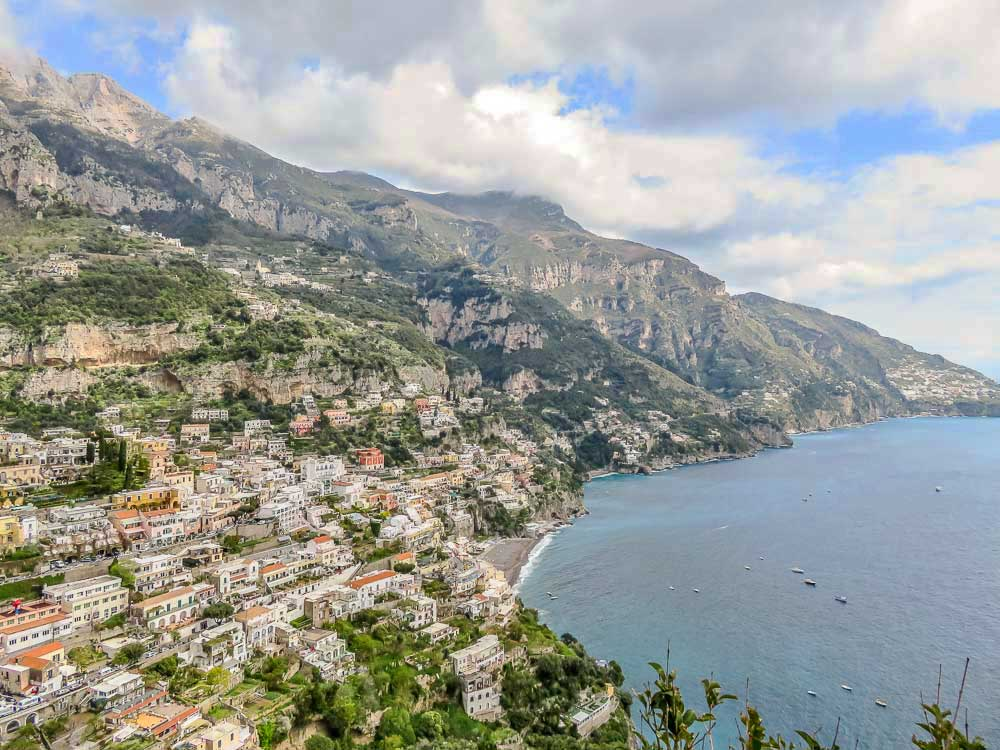

Saindo de Sorrento, Positano será a primeira terra que vai encontrar e que já pertence, efectivamente, à Costa Amalfi. A posição geográfica desta antiga vila de pescadores é deslumbrante e, apesar do desenvolvimento e do grande crescimento turístico, Positano conseguiu preservar-se como uma pitoresca “cidade vertical”, com uma arquitectura e beleza cénica muito singulares.
A Igreja de Santa Maria Assunta é uma das mais emblemáticas da Costa Amalfitana e, sem dúvida alguma, um dos locais “obrigatórios” a visitar em Positano, especialmente para católicos e devotos à Virgem Maria. Mas o melhor mesmo é ir passeando pelas suas ruelas e escadarias sem uma rota específica, descendo até á praia e ao porto, de onde se tem uma vista fabulosa da cidade encaixada pela encosta acima. Tantas vezes aclamada por diferentes escritores e poetas ou reproduzida em tela por pintores de todas as nacionalidades, Positano é também uma referência nas áreas da moda estilo marinheiro e da culinária. Assim, poderá contar com muitas boutiques, lojas e bancas de rua, bem como diversos acolhedores restaurantes, cafés e gelatarias onde pode provar excelentes doces e iguarias.
Positano